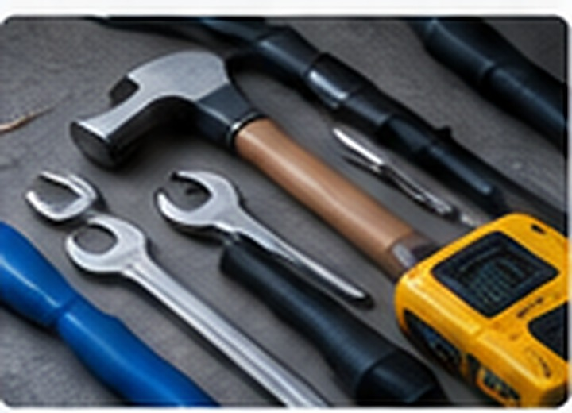
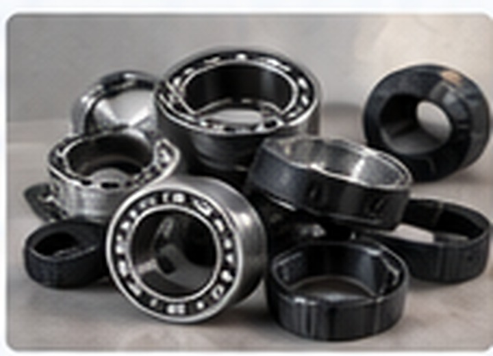
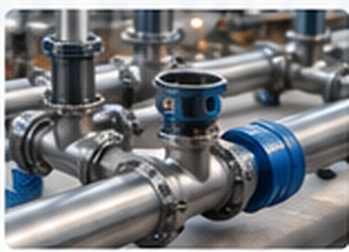
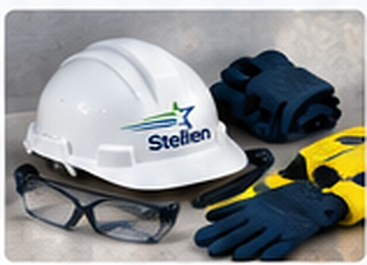
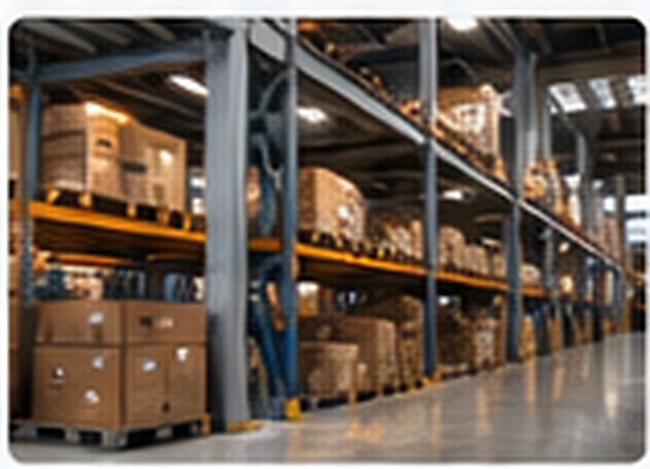

Químicos de proceso
Productos seleccionados según las condiciones de operación y el problema técnico.
Soluciones por aplicaciónProductos químicos, reactivos y soporte técnico para tratamiento de aguas, minería, control de polvo y procesos industriales.
Químicos y soluciones de proceso
Productos seleccionados por aplicación
Diagnóstico, pruebas y recomendación
Suministro recurrente para tu operación
Una propuesta de abastecimiento que combina productos de uso habitual con soluciones técnicas y repuestos difíciles de encontrar.

Productos seleccionados según las condiciones de operación y el problema técnico.
Soluciones por aplicación
Antiscalants, biocidas, coagulantes, floculantes e insumos para sistemas de tratamiento.
Agua industrial
Reactivos para flotación, separación y concentración, con evaluación técnica previa.
MineríaSupresores y estabilizadores para caminos, chancado, correas y áreas de acopio.
Eficiencia ambiental
Desincrustantes, desengrasantes, anticorrosivos y soluciones para mantenimiento.
Mantención industrial
Buscamos fabricantes internacionales con tecnologías diferenciadoras para Chile.
Importación · distribuciónNo buscamos vender un químico por catálogo. Analizamos el problema, seleccionamos la alternativa adecuada y acompañamos la implementación para generar resultados medibles.
Antiscalants, limpiadores de membranas, biocidas, inhibidores de corrosión y productos para acondicionamiento de circuitos.
Ósmosis · procesos · agua industrialSoluciones para separación sólido-líquido, clarificación, espesamiento, recuperación de agua y tratamiento de RILES.
Minería · RILES · espesadoresSupresores de polvo y estabilizadores de caminos para disminuir material particulado y optimizar el consumo de agua.
Caminos · chancado · patiosDesincrustantes, desengrasantes técnicos, inhibidores de corrosión, biocidas y productos especializados de mantenimiento.
Mantención · plantas · equiposColectores, espumantes, depresores y reactivos especiales sujetos a evaluación técnica y pruebas de aplicación.
Flotación · concentraciónBuscamos fabricantes y tecnologías para problemas específicos donde un producto estándar no entrega el resultado esperado.
Desarrollo · representación · suministroComplementamos el suministro químico con diagnóstico, selección de productos, pruebas de aplicación, especificación técnica y acompañamiento para implementar soluciones en terreno.
CONOCE NUESTROS SERVICIOS →Stellen conecta las necesidades reales de la industria con productos químicos, reactivos y capacidades técnicas. Nuestro modelo combina desarrollo comercial, conocimiento de procesos y abastecimiento para transformar un problema operacional en una solución concreta.
Atención ágil a requerimientos de compra y proyectos.
Capacidad para buscar y desarrollar soluciones técnicas.
Productos e insumos orientados a mantener tu operación.
Acompañamiento desde el requerimiento hasta la entrega.
De la mano de Kinova, fortalecemos nuestra capacidad para entregar soluciones industriales y acompañar proyectos con una mirada técnica y orientada a resultados.
Abastecimiento, repuestos, mantenimiento y soluciones para faenas y plantas.
Insumos para procesos, mantenimiento, montaje y continuidad operacional.
Ferretería, componentes, suministros y apoyo técnico para ejecución de proyectos.
Tu socio en insumos, repuestos y soluciones de ingeniería.
Envíanos el detalle de tus productos, repuestos o requerimientos de ingeniería y te contactaremos.
Insumos · Repuestos · Ingeniería
Una propuesta orientada a resolver problemas de proceso mediante productos químicos, reactivos y soporte técnico, con foco en minería e industria.
✉ mpimentel@stellen.cl
☎ +56 9 6673 4080
📍 General Del Canto 112, of. 301, Providencia, Santiago